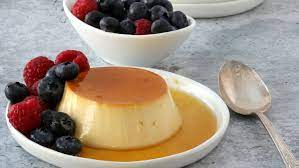

Flan

Description
The recipe to make flan doesn't require too many ingredients, and should only take about an hour of your time!
Ingredients
- 1/2 cup sugar for caramel sauce
- 2 cups whipping cream
- 1 teaspoon vanilla extract
- 3 eggs
- 1/4 cup sugar for flan
- 1/2 cup blanched almonds for garnish (optional)
- Sprig of mint for garnish (optional)
Steps
- Heat 4 cups to 5 cups of water in a pot on the back burner for the water bath
- Put a heavy-bottom skillet or saucepan over medium heat for 30 seconds. Add 1/2 cup of sugar. With the back of a wooden spoon, keep sugar moving constantly until sugar is completely melted, and of a rich medium brown color (caramelized), as shown in the photo. This will serve as the sauce.
- Carefully spoon caramelized sugar into each of the six ramekins or large dish.
- Pre-heat oven to 325 F.
- Scald cream in a saucepan. (Keep a close eye on the pan, so the cream does not boil over.) Remove pan from the stove as soon as it boils.
- While heating cream, slightly beat three eggs in a medium mixing bowl. Add 1/4 cup of sugar and stir.
- Stirring constantly, gradually add hot cream to egg mixture. Stir until the sugar is dissolved. Stir in vanilla extract.
- Carefully remove one or two ramekins to provide some extra room. Pour in hot water for water bath until water is about 1/2-inch deep in baking dish. Replace ramekins. (If using one large open baking dish, be sure that the dish is tall enough to accommodate the water necessary.)
- Ladle mixture into ramekins.
- Bake uncovered in water bath for 50 to 60 minutes, or until a knife comes out clean when inserted halfway between center and the edge of dish.
- To ensure the custard does not over-cook, check doneness after 45 minutes, then every three to five minutes.
- As soon as the dish is taken out of the oven, carefully remove each ramekin from the water bath. Set on a cooling rack until lukewarm, then chill thoroughly in the refrigerator. This usually takes at least 1 hour.
- When ready to serve, unmold by running a knife around the inside edge of baking dish. Place a small dessert plate on the top of the ramekin. With one hand under the ramekin and the other on top of the place, turn over. Tap the ramekin and the flan should drop onto the plate. If it does not, carefully “prod” the flan out of the ramekin with a small paring knife. It should slide out of the ramekin onto the plate.